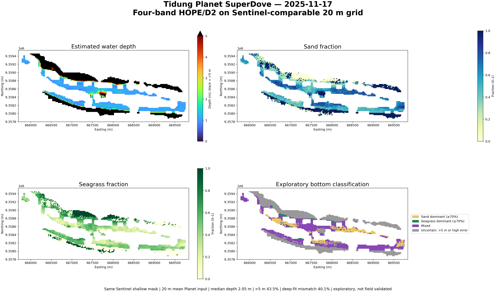

Tidung Planet SuperDove four-band result
One scene (2025-11-17), four bands, Sentinel-comparable 20 m grid and shallow-water mask.
Final four-panel result

Median depth 2.05 m; 5th–95th percentiles 1.00–14.17 m; 43.5% deeper than 5 m.
Integrity and limitation
No clipping or smoothing was applied to output rasters. This is exploratory: deep-water model mismatch is 40.1%, and the Planet crop does not contain the reviewed Sentinel offshore reference areas.